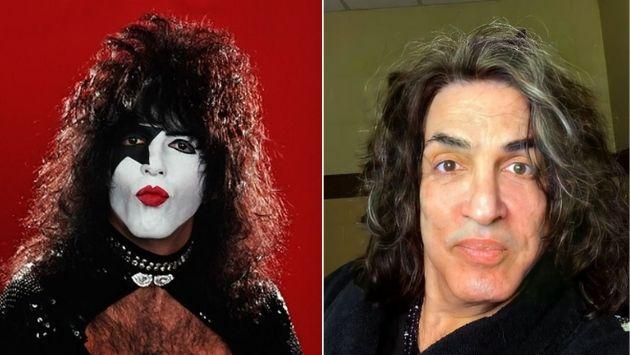

El vocalista de Kiss, Paul Stanley, dio positivo de omicron
Paul Stanley, cantante y guitarrista de Kiss, conto en sus redes sociales que dio positivo de Covid-19 por segunda vez en seis meses. En esta oportunidad se trata de la variante Omicron
L-GANTE en la mira por la muerte de un joven
El musico hincha de Alem, subio una historia a su cuenta de instagram donde llama "alto logi" al jefe de la barra brava del equipo rival
Soledad Silveira se quebro al hablar del accidente en Mendoza: "es un horror lo que paso"
La actriz Soledad Silveira aseguro estar "destrozada" tras el accidente en el cual un auto se incrusto en el hall del Cine Teatro Plaza de la localidad de Mendoza